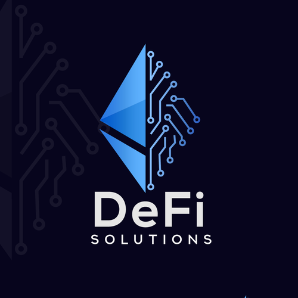
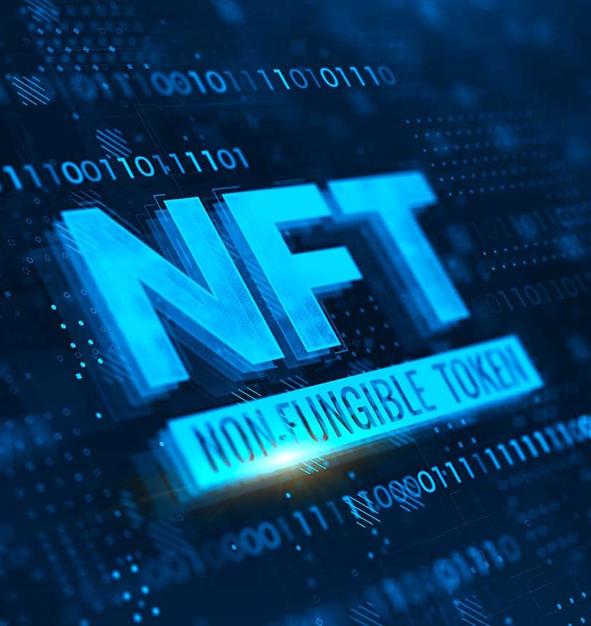

Engineering-driven approach to decentralized finance
Sustainability, transparency, and real utility over speculation.
Decentralized Finance & Governance
I have several years of hands-on experience in the cryptocurrency and decentralized finance (DeFi) ecosystem, combining technical understanding, strategic thinking, and real-world project execution.
I have worked extensively with DeFi protocols, token economics, and decentralized governance models (DAOs), providing consultancy and guidance on architecture choices, risk management, and practical implementation. My focus has always been on sustainability, transparency, and real utility, rather than short-term speculation.

DeFi Protocols & Strategic Consultancy
I have advised and supported multiple crypto and DeFi initiatives over several years, helping teams understand and implement decentralized financial mechanisms with rigor and responsibility.
This includes guidance on liquidity pools, staking mechanisms, governance tokens, and decentralized autonomous organizations (DAOs). My approach combines technical architecture with practical operational considerations, ensuring systems are both theoretically sound and practically viable.

NFT Project: African Heroes
I designed and launched an NFT project centered on African heroes, combining cultural storytelling with blockchain technology. This project covered the full lifecycle from concept to community governance.
- Concept & Narrative Design: Cultural research and storytelling framework
- NFT Creation & Minting Strategy: Technical implementation and launch planning
- Smart Contract Considerations: Security, gas optimization, and functionality
- Community & Governance Alignment: Building engaged, values-aligned communities
Token Economics & Governance Models
Beyond project execution, I have provided strategic guidance to teams navigating the complex landscape of token design and decentralized governance.
This includes designing coherent token and incentive models, navigating technical and operational trade-offs, and aligning decentralized systems with real-world constraints. The goal is always long-term sustainability and genuine value creation, not short-term speculation.
Bridging Traditional & Decentralized Systems
This experience complements my broader background in software engineering, automation, and AI, allowing me to bridge traditional systems and decentralized technologies in a pragmatic and responsible way.
Key areas of integration include:
- Smart Contract Integration: Connecting blockchain systems with traditional enterprise software
- Hybrid Architectures: Combining centralized efficiency with decentralized trust and transparency
- Governance & Compliance: Designing systems that respect both decentralized principles and regulatory realities
- Security & Risk Management: Applying enterprise-grade security practices to blockchain systems
- User Experience: Making decentralized systems accessible and practical for real users
The future of technology likely involves thoughtful integration of centralized and decentralized systems, not wholesale replacement. My goal is to help navigate that transition responsibly.